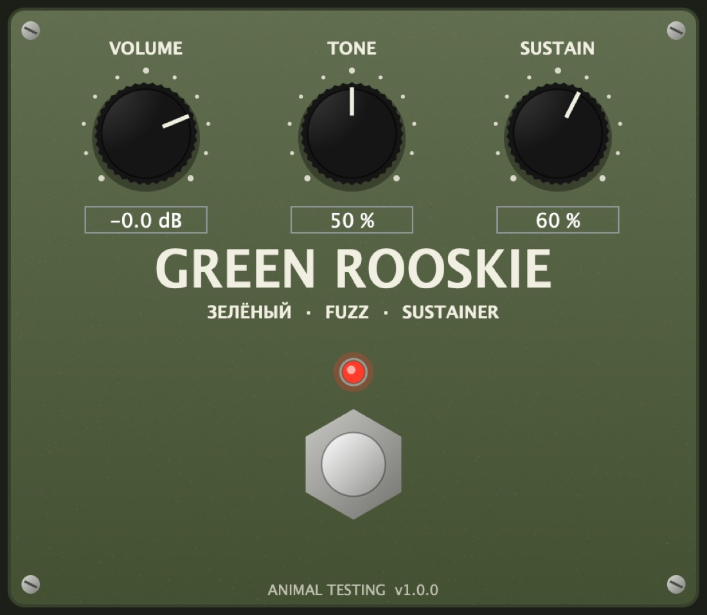

Effect · Fuzz
Green Rooskie
GrskModelled on the Russian green muff.
Thick, scooped and endless, like the 90s originals. The tone stack's corners sit close together, so the mid scoop is shallower and the low end fatter than on the American versions.
- Version
- 1.0.0
- Processing
- 4x oversampled
- Formats
- VST3 · AU · Standalone
Controls
4 parameters| Control | Range | Default | What it does |
|---|---|---|---|
| Volume | -36 to +12 dB | 0 dB | Output level. |
| Tone | 0 to 100% | 50% | Blends the passive tone stack from bass to treble. |
| Sustain | 0 to 100% | 60% | How hard the booster drives the two clipping stages. |
| Bypass | On / Off | Off | The footswitch. |
How it works
Each clipping stage is a common-emitter amp with a pair of silicon diodes in its feedback loop. That gives the soft, compressed clipping, and the feedback capacitor rolls off the highs.
The tone stack is the classic passive low-pass and high-pass blend. The whole circuit runs at four times the sample rate.
Signal path
- Input booster
- Sustain
- Clipping stage 1Diodes in the feedback loop.
- Clipping stage 2Diodes in the feedback loop.
- Passive tone stack
- RecoveryMakes the level back up.